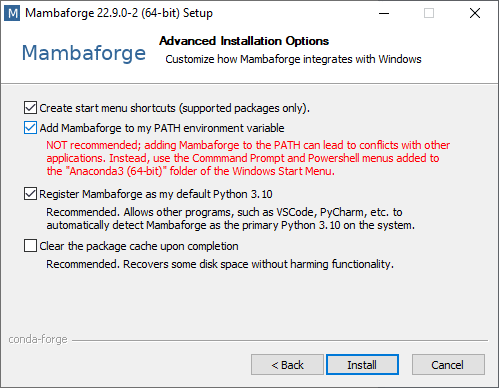
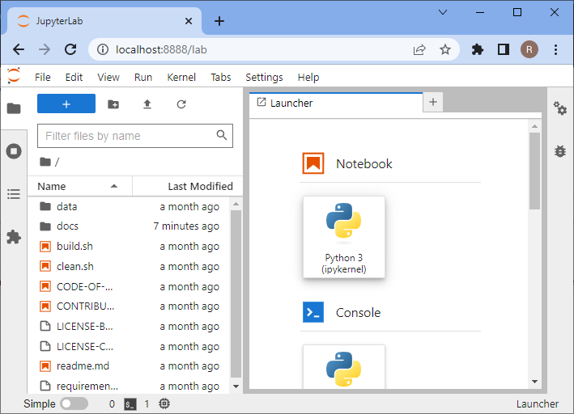
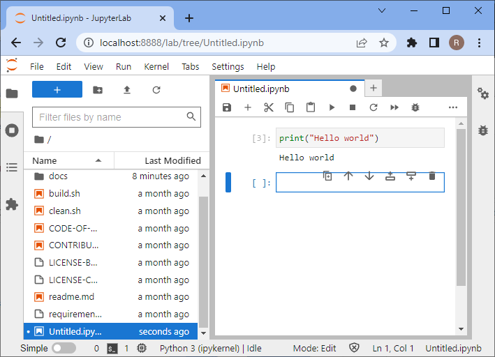

设置你的计算机#
本章提供了设置计算机以运行Python进行图像分析的说明。
设置Python和Conda环境#
在使用Python时，我们将使用许多需要组织的插件和软件库。 实现这一点的一种方法是管理Conda环境。 Conda环境可以被视为一个虚拟桌面或虚拟计算机，可通过终端访问。 如果你在一个Conda环境中安装了一些软件，它可能无法从另一个环境中访问。 如果Conda环境出现问题，例如安装了不兼容的软件，你可以直接创建一个新环境重新开始。
另请参阅
步骤1：安装Mambaforge#
下载并安装Conda。我们推荐使用Conda发行版Mambaforge。
为了便于使用，建议仅为你个人安装，并在安装过程中将Conda添加到PATH变量中。


步骤2：安装devbio-napari#
我们建议安装devbio-napari，这是一个带有一套生物图像分析插件的napari发行版。
在终端中使用以下命令：
mamba create --name devbio-napari-env python=3.9 devbio-napari -c conda-forge
提示：建议为你执行的每个项目创建一个环境。 这样，已安装的软件库和工具就不会相互影响。
步骤3：测试安装#
之后，你可以进入环境开始工作。 每当你想再次在同一项目上工作时，你应该启动命令行并输入以下内容：
mamba activate devbio-napari-env
从终端启动Jupyter lab，如下所示：
jupyter lab
浏览器将打开并显示以下网页。在”Notebook”部分，点击”Python 3 (ipykernel)”以创建一个新的笔记本：

在新笔记本中，点击第一个代码单元，输入print("Hello world")并按下键盘上的SHIFT+ENTER。
如果一切安装正确，应该如下所示：

要测试你的显卡驱动程序是否正确安装，请输入以下代码：
import pyclesperanto_prototype as cle
cle.get_device()

故障排除：显卡驱动程序#
如果错误消息包含”ImportError: DLL load failed while importing cl: The specified procedure could not be found”另见或”clGetPlatformIDs failed: PLATFORM_NOT_FOUND_KHR”，请为你的显卡和/或OpenCL设备安装最新驱动程序。
根据你的硬件从此列表中选择正确的驱动程序来源：
有时，Mac用户需要安装以下内容：
mamba install -c conda-forge ocl_icd_wrapper_apple
有时，Linux用户需要安装以下内容：
mamba install -c conda-forge ocl-icd-system
故障排除：DLL加载失败#
如果出现以下错误消息：
[...] _get_win_folder_with_pywin32
from win32com.shell import shellcon, shell
ImportError: DLL load failed while importing shell: The specified procedure could not be found.
请尝试在base环境中运行以下命令：
conda activate base
pip install --upgrade pywin32==228